IoT & Connectivity — Deep Dive
A step-by-step look at the three IoT tasks from Week 7: an ESP32 web-server LED, an MQTT/Adafruit IO dashboard controlling an LED and a relay-switched 230V bulb, and voice control through IFTTT and Google Assistant.
ESP32 LED On/Off via Web Server
The goal of this task was to turn the ESP32 into its own tiny web server — no app, no external platform — so that visiting its IP address in a browser would show a simple control page with ON and OFF buttons that switch an LED connected to the board.
Step 1 — Writing the sketch and connecting to Wi-Fi
I wrote an Arduino sketch that connects the ESP32 to the lab Wi-Fi, starts a lightweight web server on it, and defines two routes — /on and /off — each of which sets the LED pin state and sends back the updated control page as the response. Once uploaded, the Serial Monitor confirmed the board had connected to Wi-Fi, been assigned an IP address, and started the server successfully.
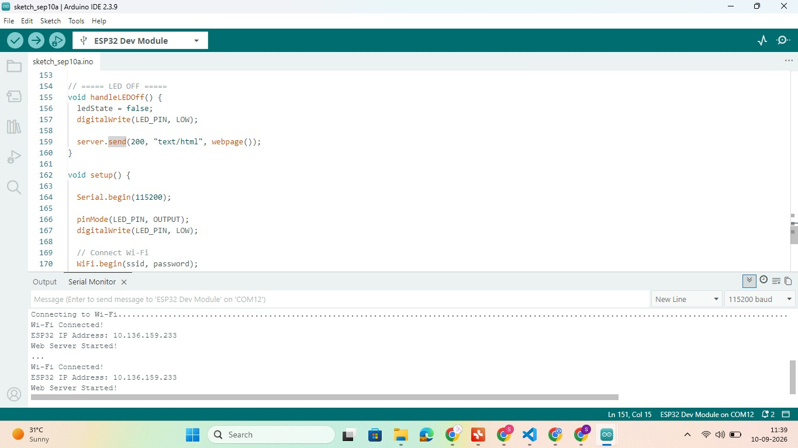
Step 2 — Testing the control page in the browser
With the board's IP address in hand, I opened it in a browser and got a clean "ESP32 LED Control" page with ON and OFF buttons and a live status indicator. Clicking ON sent a GET request to /on, which the DevTools Network tab confirmed came back with a 200 OK response — the ESP32 had received the request, switched the LED, and served the updated page back. Clicking OFF worked the same way through the /off route.
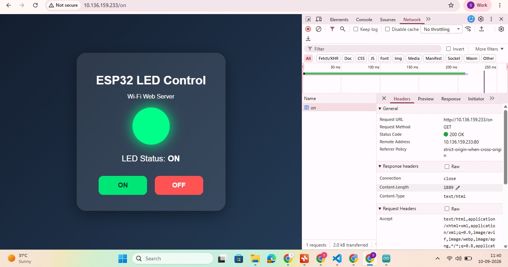
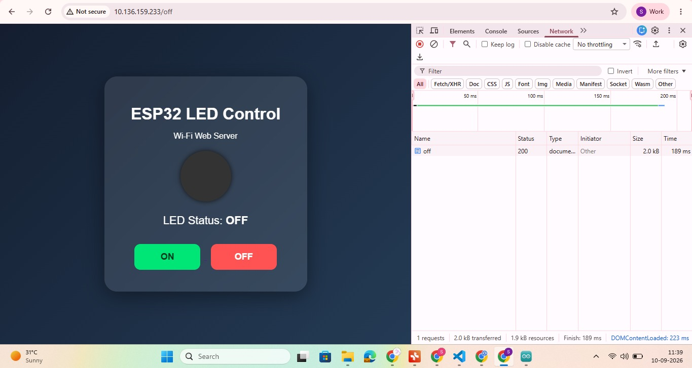
Step 3 — Verifying it on the actual hardware
The last step was confirming the browser control was actually driving the physical board and not just updating a webpage. Pressing ON on the page lit up the ESP32's onboard LED in real time, and pressing OFF turned it off immediately — confirming the full loop from browser click → HTTP request → ESP32 → physical LED was working end to end.
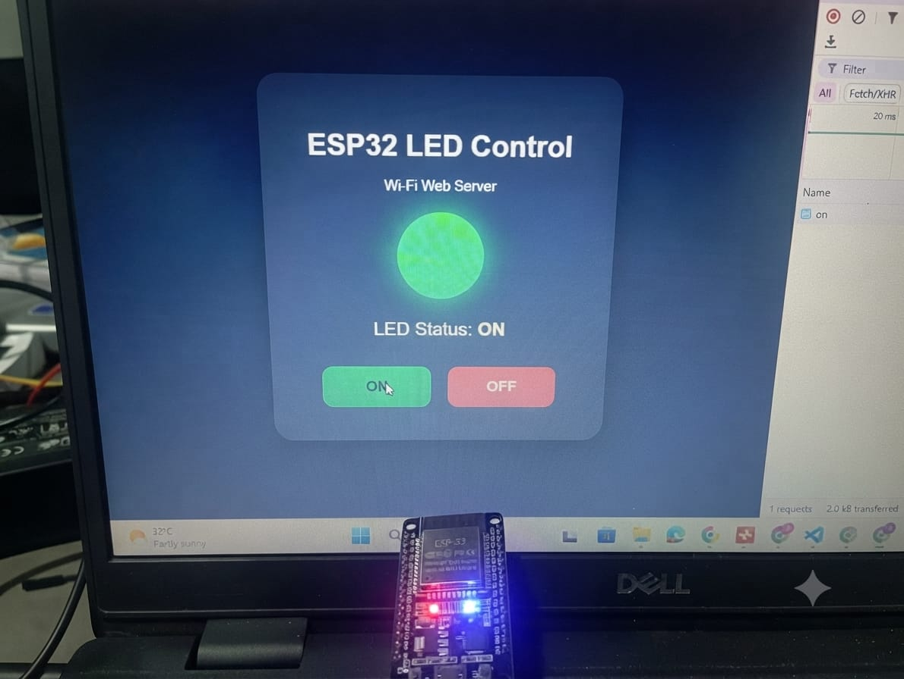
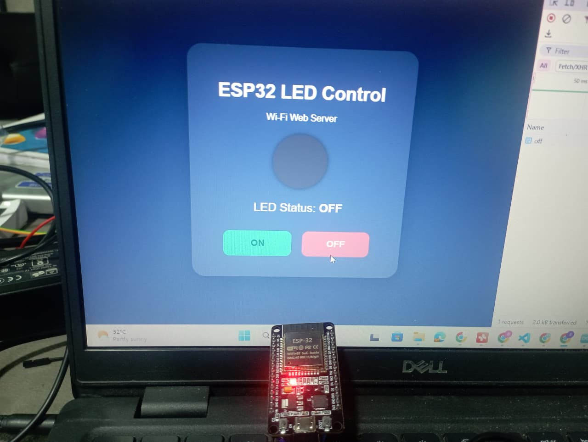
Result: a working Wi-Fi web server hosted entirely on the ESP32 itself, controlling a physical LED through a clean browser interface with no external app or cloud service involved.
MQTT + Adafruit IO — LED & Relay-Controlled 230V Bulb
This task went a step further than Task 1: instead of a page hosted locally on the ESP32, the ESP32 would connect over MQTT to Adafruit IO, so the device could be switched on and off from a live dashboard from anywhere, and would eventually control a real 230V bulb through a relay rather than a small onboard LED.
Step 1 — Setting up Adafruit IO and creating a feed
I created an Adafruit IO account and set up a new feed named LED, which acts as the channel the ESP32 publishes to and subscribes from over MQTT. Every time the LED's state changed, the feed recorded a new data point — the feed history shows over 150 recorded values, confirming the ESP32 was talking to Adafruit IO reliably.
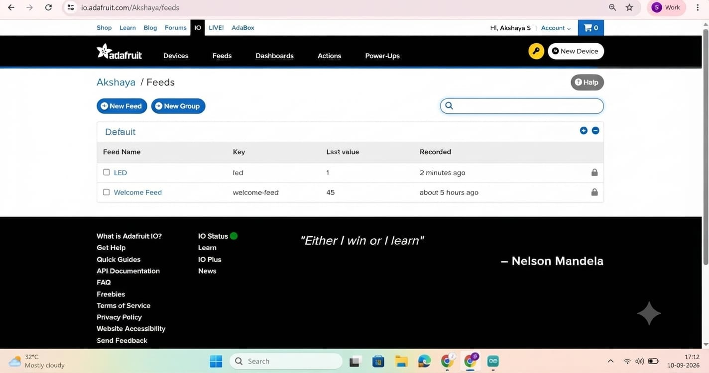
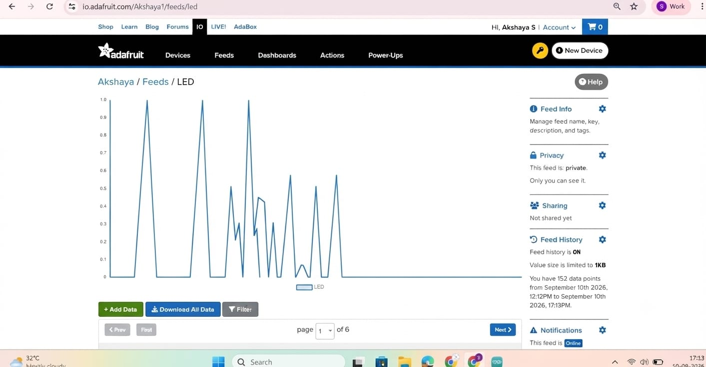
Step 2 — Building the dashboard control
Next, I built a dashboard block on top of the LED feed — a toggle switch labelled "Toggle It!!" that sends a value of 1 when switched ON and 0 when switched OFF. This gave me a live, always-available control panel: flipping the toggle publishes a new value to the feed instantly, which the ESP32 picks up over MQTT.
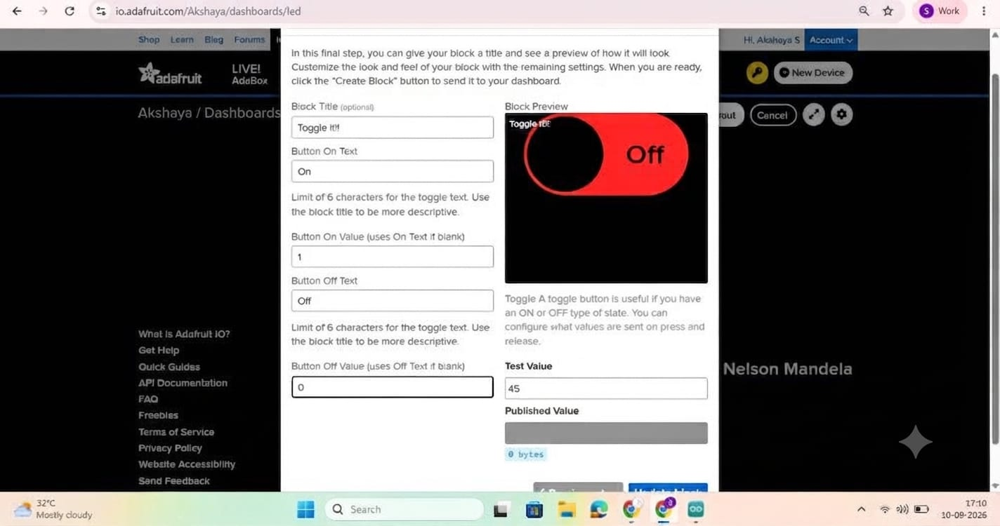
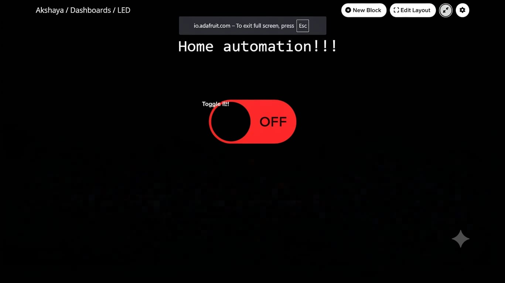
Step 3 — Moving from an LED to a real 230V bulb via relay
Once the dashboard was reliably switching the LED, I moved to the actual objective — controlling a real 230V bulb through a relay module, since the ESP32 can't switch mains voltage directly. This meant opening up a bulb holder, soldering the live and neutral wires to the relay's switching terminals, and wiring the relay's control pins to the ESP32.
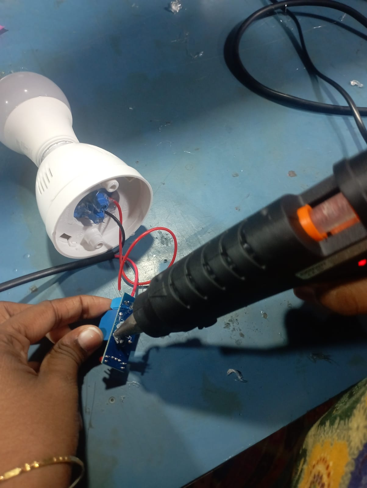
On the software side, I wrote a handleRelay() function that reads the incoming value from the Adafruit IO feed and drives the relay pin accordingly — writing it HIGH to turn the relay (and bulb) ON when the feed value is 1, and LOW to turn it OFF otherwise, with Serial print statements logging every state change for debugging.
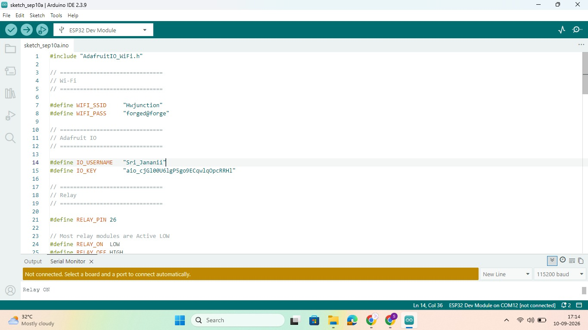
Step 4 — The mistake: a loose connection, and having to redo it
When I first connected everything — ESP32, relay, and bulb holder — the toggle on the dashboard wasn't reliably switching the bulb. After checking the code and confirming the Adafruit IO values were arriving correctly on the Serial Monitor, I traced the problem back to the hardware: one of my soldered joints on the relay wasn't making a proper connection, so the relay was only intermittently receiving power from the wiring.
I had to desolder and redo that connection — cleaning the joint, re-tinning the wire, and soldering it again more carefully this time, making sure it was mechanically secure before covering it with hot glue for insulation and strain relief.
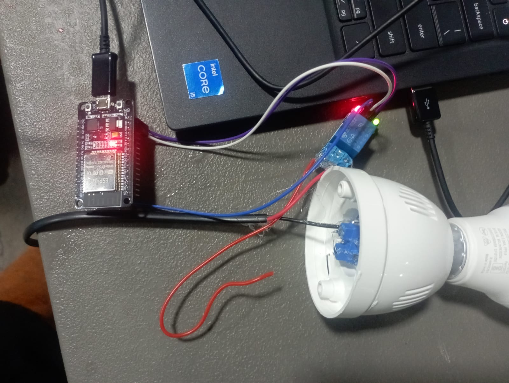
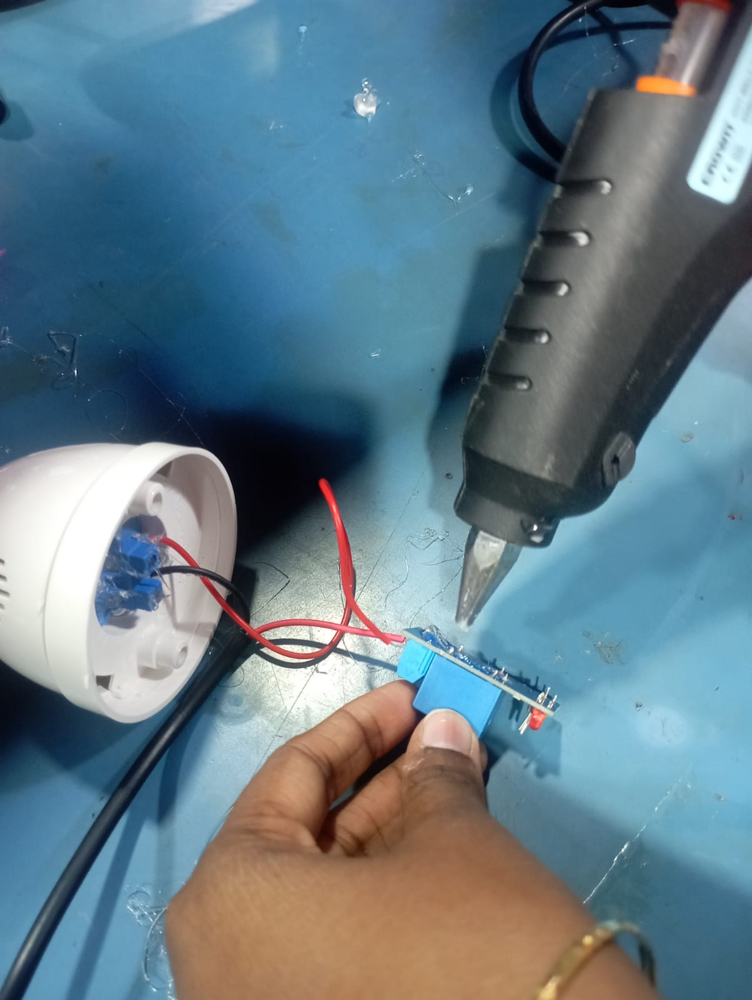
Step 5 — Success: the bulb responding correctly to the dashboard
After fixing the connection, the Serial Monitor showed clean, consistent logs every time the dashboard toggle was flipped — Adafruit IO value: 1 → Relay ON → Bulb ON and Adafruit IO value: 0 → Relay OFF → Bulb OFF — and the bulb itself switched reliably in real time from the live dashboard, exactly as intended.
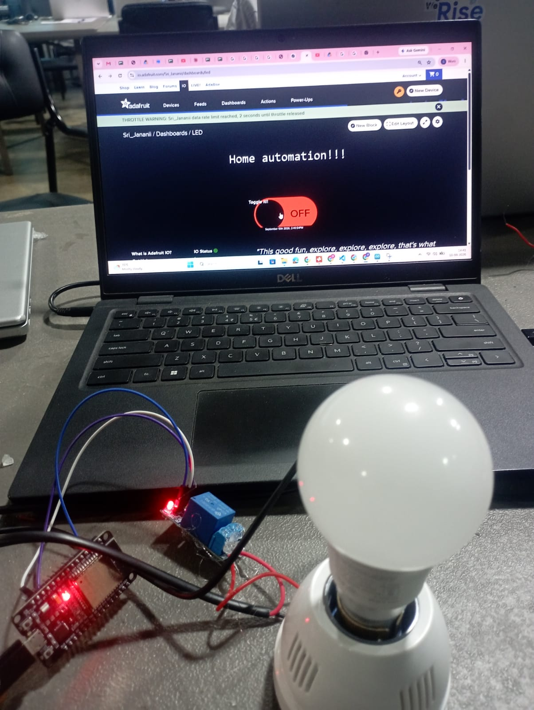
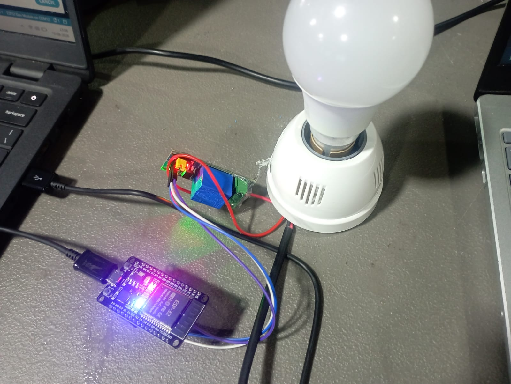
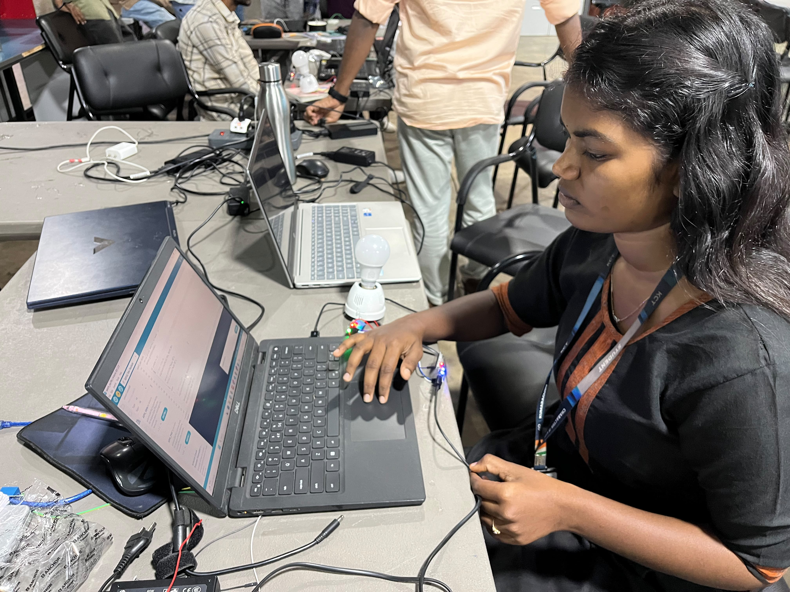
Result: a real 230V bulb controlled reliably over MQTT from a live Adafruit IO dashboard, through a relay driven by the ESP32 — and a hardware debugging lesson along the way: when software logic looks correct but behaviour is inconsistent, the problem is often a physical connection, not the code.
Voice Control On/Off — IFTTT & Google Assistant
The goal of this task was to control the same relay-switched 230V bulb from Task 2 using nothing but voice — saying a phrase to Google Assistant instead of tapping a toggle on a dashboard. IFTTT (If This Then That) was the bridge that connected a spoken Google Assistant command to the Adafruit IO feed the ESP32 was already listening to.
Step 1 — Starting a new applet and choosing Google Assistant as the trigger
On IFTTT, I created a new applet using the classic "If This → Then That" format. For the "If This" trigger service, I searched for and selected Google Assistant, which lets a spoken phrase to the Assistant kick off an automation.
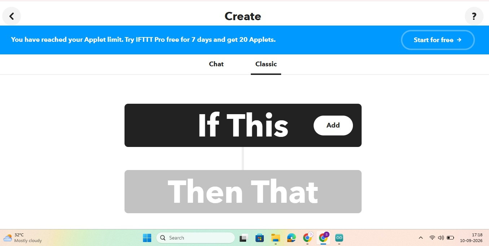
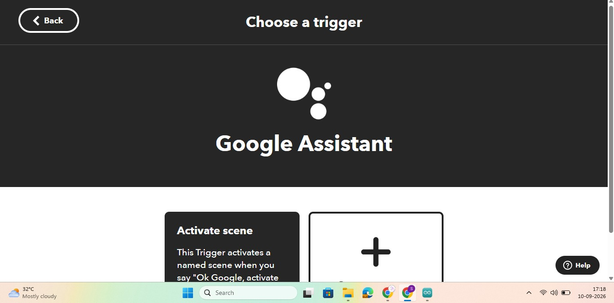
Step 2 — Setting up the "lights on" and "lights off" voice phrases
For the trigger type, I chose "Activate scene," which fires whenever I say "Ok Google, activate [scene name]." Since I needed two separate voice commands — one to turn the bulb on and one to turn it off — I set up two applets in parallel: one with the scene name "lights on" and another with the scene name "lights off."
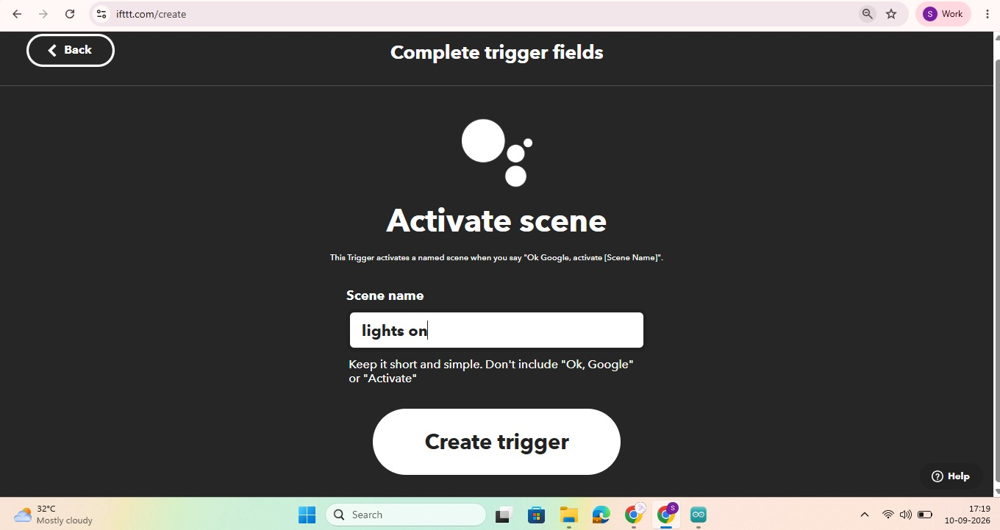
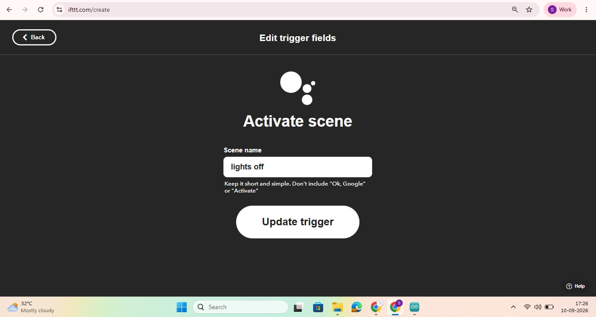
Step 3 — Connecting each trigger to the Adafruit IO LED feed
For "Then That," I chose Adafruit IO as the action service and selected "Send data to Adafruit IO," pointing both applets at the same LED feed the ESP32 was already subscribed to from Task 2. The "lights on" applet was configured to send a value of 1 to the feed, and the "lights off" applet was configured to send a value of 0 — reusing the exact same feed and value logic as the dashboard toggle, just triggered by voice instead of a tap.
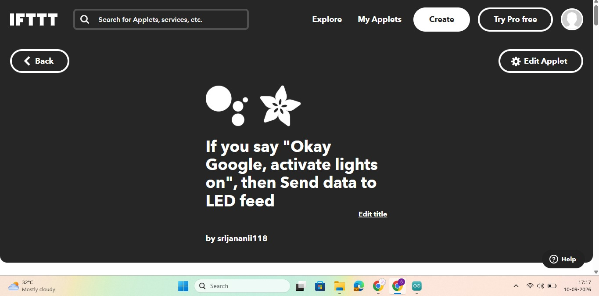
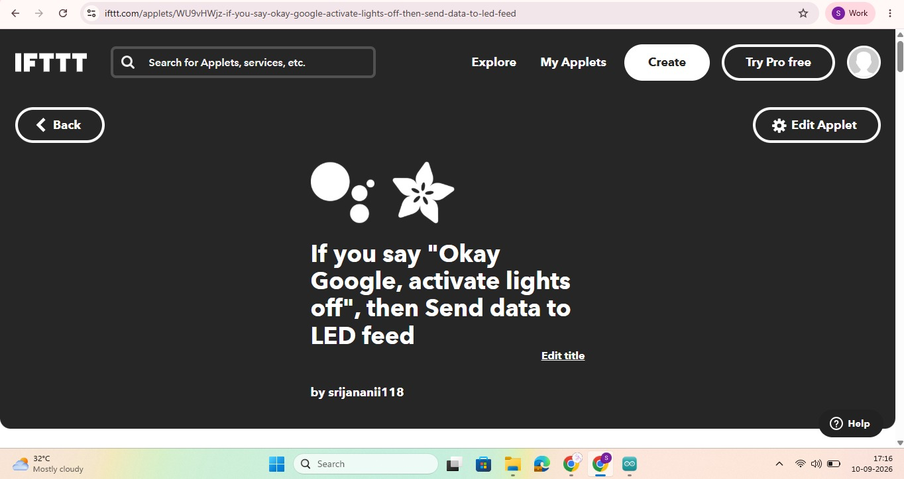
Step 4 — Reusing the Task 2 relay hardware and ESP32 code
No new wiring was needed here — the same ESP32, relay module, and 230V bulb setup from Task 2 was reused as-is, since the ESP32 was already listening to the LED feed over MQTT using the Adafruit IO library, its Wi-Fi credentials and Adafruit IO username/key defined right at the top of the sketch. Whatever wrote to that feed — a dashboard toggle or an IFTTT applet triggered by voice — the ESP32 couldn't tell the difference, and the same handleRelay() logic from Task 2 switched the relay exactly the same way.
The Serial Monitor confirmed this clearly: every time an IFTTT applet fired, the feed value changed and the ESP32 logged it instantly — Adafruit IO value: 1 → Relay ON → Bulb ON when "lights on" was triggered, and Adafruit IO value: 0 → Relay OFF → Bulb OFF when "lights off" was triggered.
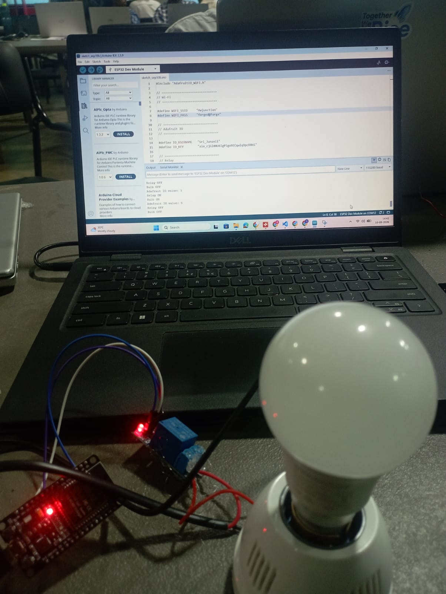

Step 5 — Testing the full voice control loop
With everything connected, I tested the complete loop using Google Assistant on a phone. Saying "Ok Google, activate lights on" triggered the IFTTT applet, which sent a value of 1 to the Adafruit IO feed, which the ESP32 picked up and used to switch the relay — turning the bulb on within a second or two. Saying "Ok Google, activate lights off" completed the reverse path and switched the bulb off, with no dashboard, button, or physical switch involved at any point.
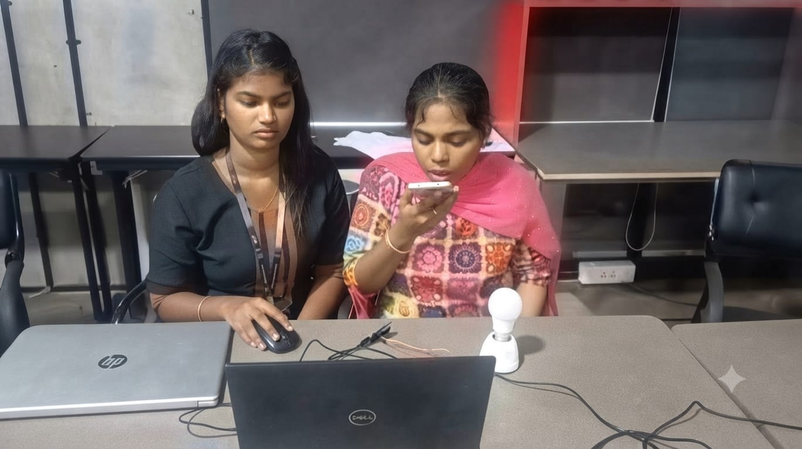
Result: a bulb controlled entirely by voice, through the full chain of spoken command → Google Assistant → IFTTT applet → Adafruit IO feed → ESP32 → relay → bulb — reaching the same physical outcome as Task 2's dashboard toggle, but through a completely different, hands-free trigger path.